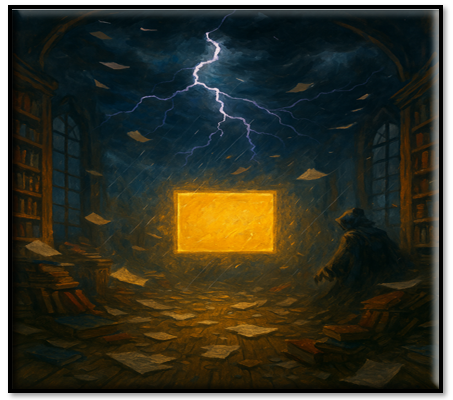
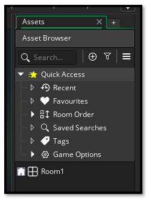
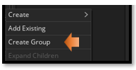
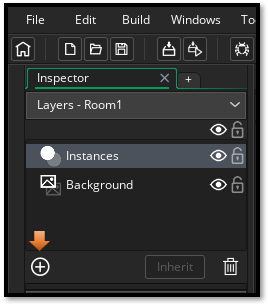
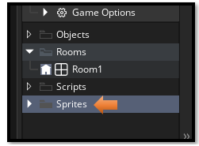
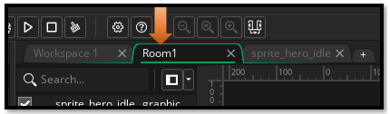
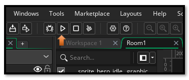

~1 Introduction to Game Maker~
1/12/2026
What is Game Maker?
 Game Maker is a free Game Making platform. You can download Game Maker here.
Game Maker Download Site
In Game Maker, you can use either a drag and drop visual programming for your game, or use the GML language, which is sort of like either JavaScript or C-like languages, but it is the language that was created for and used by the Game Maker app.
To Create Your First Game
Click on Game and Blank Game will show up below it. Then click on Blank game to start.
 Give a name to the Project, and the hit the Let’s Go! button.
Give a name to the Project, and the hit the Let’s Go! button.

This is the Game Interface, when it first starts up.

If you are used to earlier versions of Game Maker, you might be confused with the new look of your Asset Browser
Bringing Back in your Folders
Before, when you opened game maker, you would see all kinds of folder. You would have folders for Objects, Scripts, Sprites etc.

Now when you open Game Maker, you will only find one room, and it is not inside a folder like it used to be.

Right Click inside the Asset Browser, to get to a context menu
 \
\
Select Create Group.

To start with we want to Create Groups for Objects, Sprites, Rooms, and Scripts. Drag Room1 into the folder for Rooms.

Layers
Double Click on Rooms
When you double click on Room1, in the list, you will then see the instance layer pop up on the left side of the screen. You will be adding new layers for most things that you want to add to the room. Hit the plus key to add a new layer to your room.

Asset Layer
For a drawn sprite, we are only allowed to place it on an Asset Layer. So, we need to create one.

Preparing Your First Sprite: The Face of the Hero
Let’s make a sprite. Not a perfect one—just something that exists. This is your first act of creation.
Steps to Create a Sprite
Right-click “Sprites” in the Asset Browser: Create >Sprite


Name it sprite_hero_idle (naming matters later), You want to have prefixes of Sprites, or objects or scripts to tell one from another.
double click on your new sprite in the Asset Browser, and you should see the name in the center area with a section to work with your new sprite. Notice he is 64 X 64. This is fine.

Click “Edit Image” → You’ll enter the sprite editor

choose your tool to draw with from the brush pallet. And your color

Draw something simple: A dot, a square, a smiley face. I choose the largest circle for a face

Now if you do not like it, choose the size of the eraser tool in the brushes. Then go to the bottom of that panel, to find your eraser tool.

Switching Tabs
Closing the panel, or switching to another panel will save the sprite automatically.
Switch between Room and Assets in the workspace, here using the tabs at the top of the workspace.

Click on the room in the Asset Browser, and then change the size of the room to fit the size of your sprites
Make sure your workspace is in your room tab to see the room

Now just drag your sprite into the room, not that you would probably use a sprite for a hero, because you can’t attach any behavior to it but you can see it in the room
How to Run your Game
Hit the Play button at the top

And you will see your sprite on the screen.